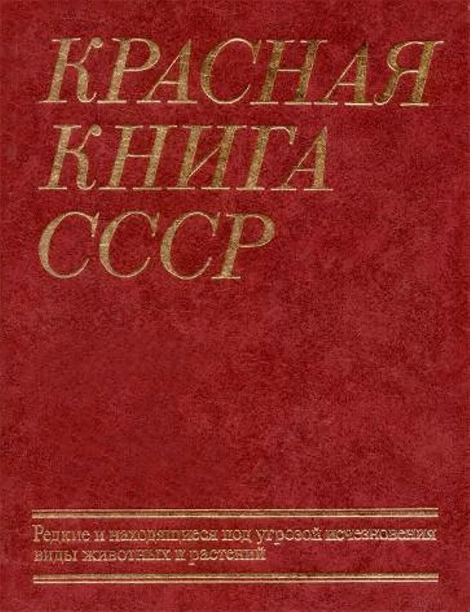

«Красная книга СССР» — аннотированный список редких и находящихся под угрозой исчезновения видов животных, растений и грибов, обитавших на территории Союза Советских Социалистических Республик. Первое издание Красной книги СССР вышло в свет в августе 1978 года.

11 января
1916
Создание первого заповедника
Именно в этот день, в 1916 году в Бурятии был создан первый в Российской империи государственный заповедник получивший название Баргузинский заповедник (так как расположен на восточном склоне Баргузинского хребта).
21 июля
2007
Появление праздника экологов
«День эколога» в России был учрежден Указом Президента РФ Владимира Путина 21 июля 2007 года по инициативе Комитета по экологии Государственной думы РФ. Отмечается ежегодно 5 июня и совпадает со Всемирным днём окружающей среды.